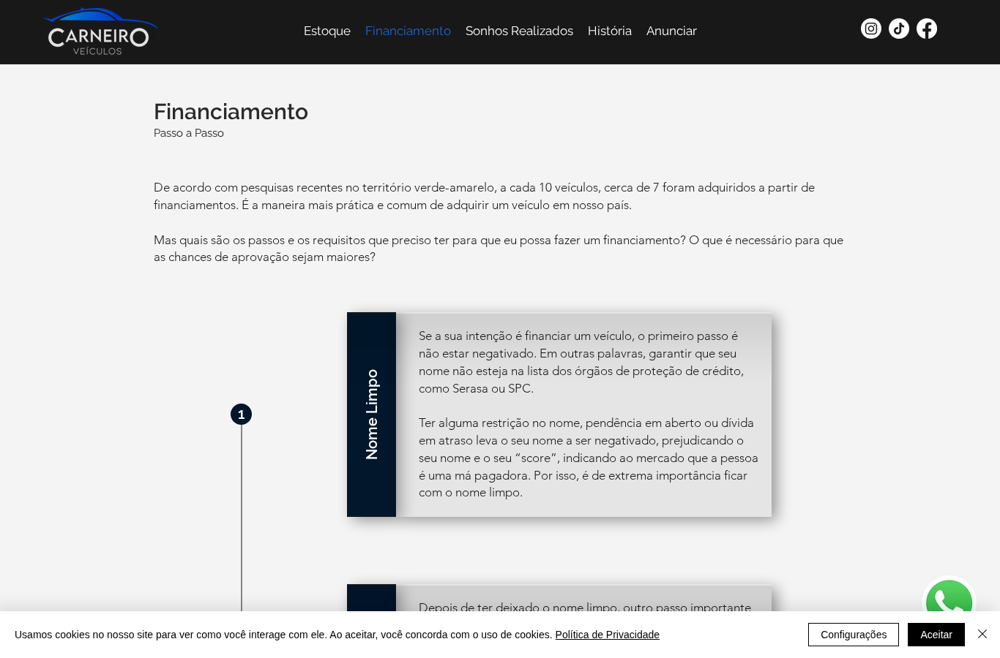
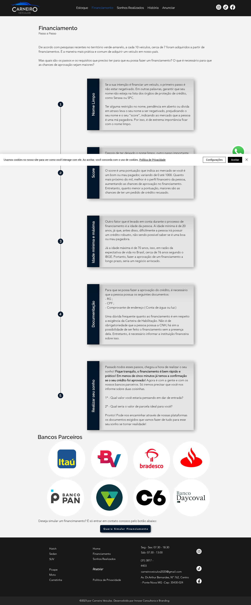

Sistema de Investigação de Marca e Identidade Online
https://www.lojacarneiroveiculos.com.br/financiamento
Prioridade: MEDIUM · Cenário: C_POSSIBLE_OFFICIAL_CHANNEL · Revisão humana: PENDING
A página analisada pertence a uma loja de veículos (escopo COBAN/parceiro comercial). A identidade visual própria da loja prevalece e a menção ao Banco BV ocorre em contexto multibancos na seção de parceiros. Todavia, a revenda utiliza o logotipo antigo/legado da BV Financeira e não exibe a declaração regulatória obrigatória de correspondente bancário (Resolução CMN nº 4.935/2021), além de omitir seu CNPJ/Razão Social, configurando comunicação ambígua com necessidade de revisão moderada. [Revisor: DOWNGRADE] A página pertence a uma loja multimarcas de veículos que opera financiamentos em contexto multibancos. O logotipo do Banco BV (versão legada) é exibido apenas na seção de 'Bancos Parceiros' ao lado de diversas outras instituições financeiras, sem sobreposição visual ou tentativa de se passar pelo banco. Diante da ausência de CNPJ, menção formal de correspondente bancário e ouvidoria, o caso configura parceria comercial com inconformidades regulatórias, justificando o downgrade de STRONG_INDICATION para REVIEW_REQUIRED com prioridade MEDIUM.


| Ref | Tipo | Local | Conteúdo |
|---|---|---|---|
| E-URL | domain | url | URL final: https://www.lojacarneiroveiculos.com.br/financiamento (domínio: www.lojacarneiroveiculos.com.br) |
| E-DISC-001 | text | search_index | Índice de busca (grounding): lojacarneiroveiculos.com.br — **URL:** `https://www.lojacarneiroveiculos.com.br/` | **Como a marca é utilizada:** Utiliza o arquivo `logo-bv-financeira-512.png` na área de "Bancos Parceiros", instruindo clientes a realizarem simulação e envio de documentos (RG, CPF e comprovantes) com promessa de aprovação de crédito em até 5 minutos | Capta propostas e dados de crédito sem disponibilizar a menção mandatória da Resolução CMN nº 4.935/2021 sobre sua condição de correspondente bancário, além de não apresentar de forma transparente e ostensiva Razão Social e CNPJ na jornada de solicitação |
| E-SHOT-VIEWPORT | screenshot | viewport | evidence/C0b1e23dba6/attempt-1/viewport.png (sha256 a6a034f9317a0f19…) |
| E-SHOT-FULL | screenshot | page | evidence/C0b1e23dba6/attempt-1/fullpage.png (sha256 e86e7ea4822f5447…) |
| E-TITLE | title | head | Financiamento | Carneiro Veículos |
| E-META-1 | meta | head | description: Saiba mais sobre fincanciamento e descubra como aumentar as suas chances de aprovação. |
| E-META-2 | meta | head | og:site_name: Carneiro Veículos |
| E-META-3 | meta | head | og:title: Financiamento | Carneiro Veículos |
| E-META-4 | meta | head | og:description: Saiba mais sobre fincanciamento e descubra como aumentar as suas chances de aprovação. |
| E-CANONICAL | meta | head | https://www.lojacarneiroveiculos.com.br/financiamento |
| E-HEAD-1 | heading | page | Financiamento |
| E-HEAD-2 | heading | page | Passo a Passo |
| E-HEAD-3 | heading | page | 1 |
| E-HEAD-4 | heading | page | Nome Limpo |
| E-HEAD-5 | heading | page | 2 |
| E-HEAD-6 | heading | page | Score |
| E-HEAD-7 | heading | page | 3 |
| E-HEAD-8 | heading | page | Idade mínima e máxima |
| E-HEAD-9 | heading | page | 4 |
| E-HEAD-10 | heading | page | Documentação |
| E-HEAD-11 | heading | page | 5 |
| E-HEAD-12 | heading | page | Realizar seu sonho |
| E-HEAD-13 | heading | page | Bancos Parceiros |
| E-HDR | text | header | Estoque Financiamento Sonhos Realizados História Anunciar |
| E-FOLD | text | viewport (acima da dobra) | Estoque Financiamento Sonhos Realizados História Anunciar Financiamento Passo a Passo De acordo com pesquisas recentes no território verde-amarelo, a cada 10 veículos, cerca de 7 foram adquiridos a partir de financiamentos. É a maneira mais prática e comum de adquirir um veículo em nosso país. Mas quais são os passos e os requisitos que preciso ter para que eu possa fazer um financiamento? O que é necessário para que as chances de aprovação sejam maiores? 1 Nome Limpo Se a sua intenção é financiar um veículo, o primeiro passo é não estar negativado. Em outras palavras, garantir que seu nome não esteja na lista dos órgãos de proteção de crédito, como Serasa ou SPC. Ter alguma restrição no nome, pendência em aberto ou dívida em atraso leva o seu nome a ser negativado, prejudicando o seu nome e o seu “score”, indicando ao mercado que a pessoa é uma má pagadora. Por isso, é de extrema importância ficar com o nome limpo. Depois de ter deixado o nome limpo, outro passo importante para o financiamento é ter um bom score. Mas afinal, o que é isso? Usamos cookies no nosso site para ver como você interage com ele. Ao aceitar, você concorda com o uso de cookies. Política de Privacidade Configurações Aceitar |
| E-FTR | text | footer | Avenida Doutor Arthur Bernardes, 762, Centro -- Ponte Nova MG Hatch Sedan SUV Picape Moto Carretinha Home Financiamento Sonhos Realizados História Seg - Sex: 07:30 - 18:30 Sáb: 07:30 - 13:00 (31) 3817 - 4403 carneiroveiculos2020@gmail.com Política de Privacidade Anunciar Av. Dr.Arthur Bernardes, Nº 762, Centro - Ponte Nova MG -Cep: 35430-024 ©2023 por Carneiro Veículos. Desenvolvido por Innove Consultoria e Branding |
| E-NAV | nav | header | <https://www.lojacarneiroveiculos.com.br/> | Estoque <https://www.lojacarneiroveiculos.com.br/estoque> | Financiamento <https://www.lojacarneiroveiculos.com.br/financiamento> | Sonhos Realizados <https://www.lojacarneiroveiculos.com.br/sonhos-realizados> | História <https://www.lojacarneiroveiculos.com.br/historia> | Anunciar <https://www.lojacarneiroveiculos.com.br/anunciar> | Instagram <https://www.instagram.com/carneiro_veiculos/> | TikTok <https://www.tiktok.com/@carneiroveiculos> | Facebook <https://www.facebook.com/veiculosdacarneiro> |
| E-CTA-1 | cta | header | Mais páginas de Estoque |
| E-CTA-2 | cta | page | Quero Simular Financiamento <https://api.whatsapp.com/send?phone=553138174403&text=Ol%C3%A1,%20tenho%20interesse%20em%20simular%20um%20financiamento.> |
| E-CTA-3 | cta | page | Configurações |
| E-CTA-4 | cta | page | Aceitar |
| E-CTA-5 | cta | page | Fechar |
| E-CONTACT-1 | contact | header | Instagram <https://www.instagram.com/carneiro_veiculos/> |
| E-CONTACT-2 | contact | header | Facebook <https://www.facebook.com/veiculosdacarneiro> |
| E-CONTACT-3 | contact | page | Quero Simular Financiamento <https://api.whatsapp.com/send?phone=553138174403&text=Ol%C3%A1,%20tenho%20interesse%20em%20simular%20um%20financiamento.> |
| E-CONTACT-4 | contact | page | <https://api.whatsapp.com/send?phone=553138174403> |
| E-CONTACT-5 | contact | footer | carneiroveiculos2020@gmail.com <mailto:carneiroveiculos2020@gmail.com> |
| E-CONTACT-6 | contact | footer | Instagram <https://www.instagram.com/carneiro_veiculos/> |
| E-CONTACT-7 | contact | footer | Facebook <https://www.facebook.com/veiculosdacarneiro> |
| E-IMG-1 | image | header (acima da dobra) | imagem alt='Logo Fundo Preto.png' src=https://static.wixstatic.com/media/fb7c74_de3aaeb13c8f44abb24b51afb5bd0134~mv2.png/v1/fill/w_156,h_67,al_c,q_85,usm_0.66_1.00_0.01,enc_avif,quality_auto/Logo%20Fundo%20Preto.png (156x67, acima da dobra) |
| E-IMG-2 | image | page | imagem alt='logo-bv-financeira-512.png' src=https://static.wixstatic.com/media/fb7c74_bf5fb1cb533d40efb36430b1912dd85e~mv2.png/v1/fill/w_144,h_144,al_c,q_85,usm_0.66_1.00_0.01,enc_avif,quality_auto/logo-bv-financeira-512.png (144x144, abaixo da dobra) |
| E-IMG-3 | image | page | imagem alt='logo-bradesco-512.png' src=https://static.wixstatic.com/media/fb7c74_db978978d552485a990a04f67c51db02~mv2.png/v1/fill/w_144,h_144,al_c,q_85,usm_0.66_1.00_0.01,enc_avif,quality_auto/logo-bradesco-512.png (144x144, abaixo da dobra) |
| E-TXT-001 | text | page | - Comprovante de endereço ( Conta de água ou luz ) |
| E-TXT-002 | text | page | Uma dúvida frequente quanto ao financiamento é em respeito a exigência da Carteira de Habilitação. Não é de obrigatoriedade que a pessoa possua a CNH, há sim a possibilidade de ser feito o financiamento sem a presença dela. Entretanto, é necessário informar a instituição financeira sobre isso. |
| E-TXT-003 | text | page | Passado todos esses passos, chegou a hora de realizar o seu sonho! Fique tranquilo, o financiamento é bem rápido e prático! Em menos de cinco minutos já temos a confirmação se o seu crédito foi aprovado! Agora é com a gente e com os nossos bancos parceiros. Só iremos precisar que você nos informe sobre duas coisinhas. |
| E-TXT-004 | text | page | Bancos Parceiros |
| E-TXT-005 | text | page | Av. Dr.Arthur Bernardes, Nº 762, Centro - Ponte Nova MG -Cep: 35430-024 |
| E-NET-BLOCKED | network | collection | 1 requisição(ões) bloqueadas pela política: https://frog.wix.com/panorama?src=11&evid=114700&sessionId=df4b3af8-b95e-4932-89bf-93a9a2fede7a&platform=viewer&batchLength=100&batchSize=69266&batchItems=INFO%7Ccom.wixpress.html-client.wix-thunderbo -> empty or oversized URL |
| Dimensão | Sinal | Achado | Refs |
|---|---|---|---|
| VISUAL_IDENTITY | NEUTRAL | Identidade visual própria da Carneiro Veículos predomina no site, sem mimetização da identidade institucional do Banco BV. | E-SHOT-VIEWPORT E-SHOT-FULL |
| DECLARED_COMMERCIAL_IDENTITY | CONFUSION | Identificação comercial limitada ao nome fantasia Carneiro Veículos e endereço físico, sem exibição ostensiva de CNPJ ou Razão Social. | E-FTR E-SHOT-FULL |
| CORRESPONDENT_TRANSPARENCY | CONFUSION | Ausência de texto regulatório informando a qualidade de correspondente bancário ou os termos da Resolução CMN nº 4.935/2021. | E-SHOT-FULL E-FTR E-TXT-003 |
| LOGO_USAGE | CONFUSION | Exibição do logotipo legado/antigo da BV Financeira (B vermelho e V azul) na seção de Bancos Parceiros. | E-IMG-2 E-SHOT-FULL |
| SERVICE_JOURNEY | NEUTRAL | Jornada orientativa de financiamento veicular com direcionamento para simulação via WhatsApp da própria loja. | E-CTA-2 E-TXT-003 E-CONTACT-3 |
| INSTITUTIONAL_LANGUAGE | LEGITIMATE | Discurso em terceira pessoa referente aos 'nossos bancos parceiros', sem reivindicação de ser o próprio banco. | E-TXT-003 E-HEAD-13 |
| CONTACT_CHANNELS | NEUTRAL | Canais de contato apresentados pertencem à própria revenda de veículos (telefone comercial e WhatsApp regional DDD 31). | E-FTR E-CONTACT-3 E-CONTACT-4 |
| CONSUMER_CONFUSION | CONFUSION | Potencial confusão residual decorrente do uso de marca desatualizada do banco e ausência de informações de vínculo e ouvidoria. | E-IMG-2 E-SHOT-FULL |
A página analisada pertence a uma loja de veículos (escopo COBAN/parceiro comercial). A identidade visual própria da loja prevalece e a menção ao Banco BV ocorre em contexto multibancos na seção de parceiros. Todavia, a revenda utiliza o logotipo antigo/legado da BV Financeira e não exibe a declaração regulatória obrigatória de correspondente bancário (Resolução CMN nº 4.935/2021), além de omitir seu CNPJ/Razão Social, configurando comunicação ambígua com necessidade de revisão moderada.
Nenhum CNPJ ou razão social identificáveis no conteúdo coletado.
| Tipo | Valor | Ref | Contexto |
|---|---|---|---|
| domain | lojacarneiroveiculos.com.br | E-URL | |
| carneiroveiculos2020@gmail.com | E-FTR | ||
| social_profile | https://www.instagram.com/carneiro_veiculos/ | E-NAV | |
| social_profile | https://www.tiktok.com/@carneiroveiculos | E-NAV | |
| social_profile | https://www.facebook.com/veiculosdacarneiro | E-NAV | |
| trade_name | Carneiro Veículos | E-META-2 | |
| Quero Simular Financiamento <https://api.whatsapp.com/send?phone=553138174403&text=Ol%C3%A1,%20tenho%20interesse%20em%20simular%20um%20financiamento.> | E-CONTACT-3 | ||
| <https://api.whatsapp.com/send?phone=553138174403> | E-CONTACT-4 | ||
| partnership_declaration | Bancos Parceiros | E-DISC-001 | **Como a marca é utilizada:** Utiliza o arquivo `logo-bv-financeira-512.png` na área de "Bancos Parceiros", instruindo clientes a realizarem simulação e envio de documentos (RG, CPF e comprovantes) co |
Mapeamento indicativo para apoio à auditoria. Não constitui conclusão regulatória; a decisão definitiva pertence à auditoria.
Fonte: NORMATIVE
Art. 14. O contrato de correspondente deve estabelecer: [...] II - vedação à utilização, pelo contratado, de logomarca ou de outros atributos que sejam similares aos adotados pela instituição contratante em suas agências, postos de atendimento, sítio eletrônico na internet, aplicativo ou outras plataformas de comunicação em rede;
Hipótese: Uso de logomarca, uso excessivo/desproporcional ou de atributos similares aos adotados pela contratante em seus canais. A norma disciplina correspondentes contratados; o responsável não foi identificado como correspondente.
Evidência observada: E-DISC-001 E-IMG-2 E-SHOT-FULL
Informação faltante:
Fonte: NORMATIVE
Art. 14. O contrato de correspondente deve estabelecer: [...] III - divulgação ao público, pelo contratado, de sua condição de prestador de serviços à instituição contratante, identificada pelo nome com que é conhecida no mercado, com descrição dos produtos e serviços oferecidos e canais de contato da instituição contratante, inclusive de sua ouvidoria, em local visível, em destaque e em formato legível, por meio de: a) sítio eletrônico do correspondente na internet, acessível na página inicial; b) aplicativo e outras plataformas de comunicação em rede do correspondente; [...]
Hipótese: Divulgação ao público da condição de prestador de serviços/parceria ausente, insuficiente, ambígua ou sem destaque. A norma disciplina correspondentes contratados; o responsável não foi identificado como correspondente.
Evidência observada: E-DISC-001 E-FTR E-IMG-2 E-SHOT-FULL E-TXT-003
Informação faltante:
Fonte: NORMATIVE
Art. 3º O correspondente atua por conta e sob as diretrizes da instituição contratante, que assume inteira responsabilidade pelo atendimento prestado aos clientes e usuários por meio do contratado.
Evidência observada: —
Se o responsável não for correspondente contratado, os indícios podem caracterizar uso indevido de marca ou fraude, fora do escopo da Res. 4.935: avaliar encaminhamento às áreas jurídica/segurança.
Limitações: requisitos contratuais/internos não fornecidos: mapeamento limitado ao texto normativo
Decisão: DOWNGRADE → REVIEW_REQUIRED / MEDIUM
A página pertence a uma loja multimarcas de veículos que opera financiamentos em contexto multibancos. O logotipo do Banco BV (versão legada) é exibido apenas na seção de 'Bancos Parceiros' ao lado de diversas outras instituições financeiras, sem sobreposição visual ou tentativa de se passar pelo banco. Diante da ausência de CNPJ, menção formal de correspondente bancário e ouvidoria, o caso configura parceria comercial com inconformidades regulatórias, justificando o downgrade de STRONG_INDICATION para REVIEW_REQUIRED com prioridade MEDIUM.
| Tema | Severidade | Questionamento | Refs |
|---|---|---|---|
| Desproporcionalidade da classificação de indício forte | HIGH | A marca BV não é utilizada de forma predominante nem simula canal oficial; ela aparece inserida em uma grade de 'Bancos Parceiros' juntamente com outras 7 instituições financeiras (Itaú, Bradesco, Santander, Pan, C6, Daycoval), sob a identidade visual consolidada da loja Carneiro Veículos. | E-SHOT-FULL E-HEAD-13 E-IMG-2 E-IMG-3 E-TXT-003 |
| Enquadramento regulatório adequado | MEDIUM | Trata-se de um parceiro comercial/COBAN típico em contexto multibancos que capta propostas sem exibir CNPJ, razão social e aviso regulatório da Resolução CMN nº 4.935/2021, além de exibir logotipo legado, o que demanda auditoria de regularidade de parceria (REVIEW_REQUIRED) e não tratamento como canal falso/oficial. | E-SHOT-FULL E-FTR E-IMG-2 |
| domain_attribution | MEDIUM | Responsável pela página não identificado; a conclusão sobre a marca não pode ser atribuída a um estabelecimento específico. | E-URL |
| Fonte | Consulta / hipótese | URL original | Título / trecho |
|---|---|---|---|
| grounding | Objetivo: Páginas de financiamento que expõem arquivos de logotipo da marca ou logo antiga (B vermelho / V azul).
Execute no Google Search as seguintes consultas (dorks):
- (inurl:logo-bv OR "logo-bv" OR "logo-bv-financeira" OR "logo antiga bv" OR "bv logo antiga") (financiamento OR veículos OR crédito) -site:bv.com.br -site:bancobv.com.br -site:bvfinanceira.com.br -site:bvinvestimentos.com.br -site:napista.com.br -site:bvopen.com.br -site:meufinanciamentosolar.com.br -site:votorantim.com.br -site:vam.com.br -site:reclameaqui.com.br -site:jusbrasil.com.br -site:jus.br
- ("Logo Banco BV" OR "Logo bv financeira" OR "logo BV" OR "logo BV Financeira") (financiamento OR veículos OR consignado) -site:brandsoftheworld.com -site:logospng.org -site:bv.com.br -site:bancobv.com.br -site:bvfinanceira.com.br -site:bvinvestimentos.com.br -site:napista.com.br -site:bvopen.com.br -site:meufinanciamentosolar.com.br -site:votorantim.com.br -site:vam.com.br -site:reclameaqui.com.br -site:jusbrasil.com.br -site:jus.br
- ("BV Financeira" OR "Banco BV") ("logo antiga" OR "logotipo antigo" OR "marca antiga") -site:bv.com.br -site:bancobv.com.br -site:bvfinanceira.com.br -site:bvinvestimentos.com.br -site:napista.com.br -site:bvopen.com.br -site:meufinanciamentosolar.com.br -site:votorantim.com.br -site:vam.com.br -site:reclameaqui.com.br -site:jusbrasil.com.br -site:jus.br
Liste de forma abrangente as páginas públicas encontradas (até 12 resultados distintos), informando para cada uma o nome do estabelecimento/perfil, a URL e como a marca é utilizada (destaque visual, título, feirão, simulador, redes sociais e se há ou não identificação clara de CNPJ e condição de correspondente bancário). H1-identity:logo-assets | https://www.lojacarneiroveiculos.com.br/financiamento | lojacarneiroveiculos.com.br **URL:** `https://www.lojacarneiroveiculos.com.br/` | **Como a marca é utilizada:** Utiliza o arquivo `logo-bv-financeira-512.png` na área de "Bancos Parceiros", instruindo clientes a realizarem simulação e envio de documentos (RG, CPF e comprovantes) com promessa de aprovação de crédito em até 5 minutos | Capta propostas e dados de crédito sem disponibilizar a menção mandatória da Resolução CMN nº 4.935/2021 sobre sua condição de correspondente bancário, além de não apresentar de forma transparente e ostensiva Razão Social e CNPJ na jornada de solicitação |
Original: https://www.lojacarneiroveiculos.com.br/financiamento
Final: https://www.lojacarneiroveiculos.com.br/financiamento
| Artefato | Caminho | SHA-256 | Bytes |
|---|---|---|---|
| screenshot_viewport | evidence/C0b1e23dba6/attempt-1/viewport.png | a6a034f9317a0f193e34e3fe22685a449ee7a123857105c371e58b105dbc8a7e | 93888 |
| screenshot_full | evidence/C0b1e23dba6/attempt-1/fullpage.png | e86e7ea4822f5447db55ee6ca3e8f54a0b868e8dd1152de29c700574536f9625 | 377716 |
| html | evidence/C0b1e23dba6/attempt-1/page.html.txt | d65d5dd3e8a6a6a8110a491c3064144dc0c7503e72ca3aee983de5f5dcd7b62c | 850572 |
| text | evidence/C0b1e23dba6/attempt-1/text.txt | 25a91c912f0aeeb03dff64a0b4562c0607da50d81602c7a3360c0c8e2a51a341 | 3876 |
| page_data | evidence/C0b1e23dba6/attempt-1/page.json | a400f93ff19d10db4386f2f380cb30c2082d9a28e34484446c91306ee1558b93 | 19500 |
| Quando | De | Para | Nota |
|---|---|---|---|
| 2026-11-25T18:12:10+00:00 | DISCOVERED | QUEUED | prioritised (score 1.0) |
| 2026-11-25T19:23:36+00:00 | QUEUED | COLLECTING | |
| 2026-11-25T19:23:42+00:00 | COLLECTING | COLLECTED | |
| 2026-11-25T19:23:42+00:00 | COLLECTED | ANALYZING | |
| 2026-11-25T19:23:57+00:00 | ANALYZING | REVIEWING | |
| 2026-11-25T19:24:15+00:00 | REVIEWING | COMPLETED |